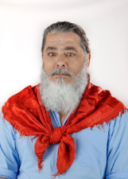
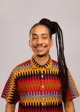

Rio Grande do Sul
Quem ocupa os cargos hoje e quem assume em 2027.
Resultado provisórioTSE, capturado em 29/10/2026
Poder Executivo
Administra o governo e executa as leis: saúde, educação, segurança, estradas e o orçamento.
Governador
Eduardo LeitePSDB · 3.687.126 votos · eleito em 2022✓ Reeleito›Quem comanda cada cidade do estado.
Poder Legislativo
Cria as leis, aprova o orçamento e fiscaliza o Executivo.
Senadores (3)
Hamilton MourãoREPUBLICANOS · 2.593.294 votos · eleito em 2022★ Novato no Senado›Luis Carlos HeinzePP · 2.316.365 votos · eleito em 2018★ Novato no Senado› Paulo PaimPT · 1.875.245 votos · eleito em 2018✓ Reeleito›
Paulo PaimPT · 1.875.245 votos · eleito em 2018✓ Reeleito›
Deputados federais (31)
Bancada federal por partido
31 cadeiras de Rio Grande do Sul
- PT619%
- PL413%
- MDB310%
- PP310%
- REPUBLICANOS310%
- PDT26%
- PSDB26%
- CIDADANIA13%
- NOVO13%
- PCDOB13%
- PODE13%
- PSB13%
- PSD13%
- PSOL13%
- UNIÃO13%
Do partido com mais cadeiras para o com menos, não por posição política. Cada partido usa a sua cor de marca.
Deputados federais (31): buscar e ver a lista
Deputados estaduais e distritais (55)
Assembleia por partido
55 cadeiras de Rio Grande do Sul
- PT1120%
- PP713%
- MDB611%
- PL59%
- PSDB59%
- REPUBLICANOS59%
- PDT47%
- UNIÃO35%
- PODE24%
- PSOL24%
- NOVO12%
- PCDOB12%
- PSB12%
- PSD12%
- PTB12%
Do partido com mais cadeiras para o com menos, não por posição política. Cada partido usa a sua cor de marca; cinza é partido sem cor registrada na fonte.
Deputados estaduais e distritais (55): buscar e ver a lista

Luiz MarencoPDT · 27.624 votos · eleito em 2022✓ Reeleito›MainardiPT · 56.859 votos · eleito em 2022✓ Reeleito›Marcus ViníciusPP · 30.894 votos★ Novato›
Matheus GomesPSOL · 82.401 votos★ Novato›Miguel RossettoPT · 37.790 votos★ Novato›Neri O CarteiroPSDB · 32.378 votos · eleito em 2022✓ Reeleito›Paparico BacchiPL · 59.646 votos✓ Reeleito›Patricia AlbaMDB · 44.871 votos · eleito em 2022★ Novato›Pedro PereiraPSDB · 31.255 votos · eleito em 2022✓ Reeleito›Pepe VargasPT · 69.949 votos✓ Reeleito›Professor BonattoPSDB · 48.409 votos · eleito em 2022★ Novato›Professor ClaudioPODE · 33.709 votos★ Novato›Rodrigo LorenzoniPL · 85.692 votos · eleito em 2022★ Novato›SantiniPODE · 28.294 votos↺ Retorno›Sergio PeresREPUBLICANOS · 74.685 votos✓ Reeleito›Silvana CovattiPP · 82.717 votos · eleito em 2022✓ Reeleito›Sofia CavedonPT · 39.039 votos✓ Reeleito›SossellaPDT · 24.946 votos↺ Retorno›Stela FariasPT · 37.957 votos · eleito em 2022✓ Reeleito›Valdeci OliveiraPT · 70.580 votos✓ Reeleito›Vilmar ZanchinMDB · 44.367 votos✓ Reeleito›Zé NunesPT · 44.035 votos✓ Reeleito›Os eleitos de cada cidade do estado.
Poder Judiciário
Julga os conflitos e garante que as leis sigam a Constituição.
Os desembargadores do Tribunal de Justiça e do Tribunal Regional Eleitoral. Não são eleitos.
Poder Executivo
Administra o governo e executa as leis: saúde, educação, segurança, estradas e o orçamento.
Governador
ZuccoPL · 3.516.048 votos★ Novato›Quem comanda cada cidade do estado.
Poder Legislativo
Cria as leis, aprova o orçamento e fiscaliza o Executivo.
Senadores (3)
Hamilton MourãoREPUBLICANOS · 2.593.294 votos · eleito em 2022★ Novato no Senado›Marcel van HattemNOVO · 3.449.053 votos★ Novato no Senado›SandersonPL · 3.453.316 votos★ Novato no Senado›Deputados federais (31)
Bancada federal por partido
31 cadeiras de Rio Grande do Sul
- PL826%
- PT516%
- PP413%
- MDB310%
- PODE26%
- PSD26%
- REPUBLICANOS26%
- NOVO13%
- PCDOB13%
- PDT13%
- PSOL13%
- UNIÃO13%
Do partido com mais cadeiras para o com menos, não por posição política. Cada partido usa a sua cor de marca.
Deputados federais (31): buscar e ver a lista
Deputados estaduais e distritais (55)
Assembleia por partido
55 cadeiras de Rio Grande do Sul
- PL1222%
- PT916%
- PP713%
- MDB59%
- PSD59%
- PDT47%
- REPUBLICANOS47%
- PSOL35%
- PODE24%
- NOVO12%
- PCDOB12%
- PSDB12%
- UNIÃO12%
Do partido com mais cadeiras para o com menos, não por posição política. Cada partido usa a sua cor de marca.
Deputados estaduais e distritais (55): buscar e ver a lista
Os eleitos de cada cidade do estado.
Poder Judiciário
Julga os conflitos e garante que as leis sigam a Constituição.
Os desembargadores do Tribunal de Justiça e do Tribunal Regional Eleitoral. Não são eleitos.
Como ler
★ Novato Primeiro mandato nesta casa (Câmara ou Senado).
✓ Reeleito Já estava no cargo e foi eleito de novo.
↺ Retorno Já teve mandato, mas estava fora.
Sem selo Não conseguimos ligar a pessoa a um mandato anterior. Isso não quer dizer que seja novata: simplesmente não afirmamos nada.
Provisório Só é confirmado na diplomação.